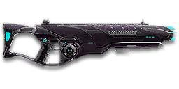

← Back to the VX29 Polaris comparison
Sage Guide · Vanu Sovereignty · Heavy Assault
The Vanu Sovereignty's close-quarters LMG — 650 certs of best-in-class hipfire, a 100-round magazine, and the tightest aimed bloom cap of any LMG. This page teaches you to win fights with it today.
The one-line verdict: a close-quarters specialist that hipfires like a carbine and holds its aim longer than any other LMG. It rewards good aim and short bursts, and punishes spray-and-pray. Fight between 8 and 40 metres and it will carry you.

The VX29 Polaris · Vanu Labs · 100-round magazine
Picture the scene, because you've probably lived it: you're sprinting across a courtyard, an enemy appears, and you do everything at once — hold the trigger down while you're still running, then press aim-down-sights (ADS) a split-second later, finger still down. The sight picture snaps in, it looks precise… and your bullets spray everywhere except the man in your crosshair. He kills you. It feels like the game cheated. It didn't — here's what actually happened.
Sprinting — cone maxed at 7.0°, the widest it can ever be.
ADS pressed mid-hold — the cone does NOT reset.
Bullets spray — the sight lies, the cone doesn't.
You started firing from a sprint, from the hip. Sprinting is the least accurate state in the game: your cone of fire starts at 7.0° — fully bloomed, the widest it can ever be. Every shot you fire from the hip widens it further still (+0.10° per shot).
Then you pressed ADS mid-hold — and nothing reset. Aiming down sights does not shrink a cone of fire that is already bloomed. The scope only gives you a precise picture; the bullets keep flying out of the wide cone you built while running and hipfiring. That's the whole mystery: accurate-looking aim, wildly inaccurate gun.
Two timers stack the deck further: your gun needs about 0.3 s to settle after a sprint, and raising the sight itself takes ~0.15 s. Trigger held through all of it means your first half-second of fire is pure confetti.
Feet planted — let the sprint settle, ~0.3 s.
Sight up — the cone is a needle, 0.10°.
Fire from the 0.10° cone — every round starts true.
Hipfire works: no ADS needed, stopping optional. The Polaris's standing hipfire ring is only 0.35 m wide at 8 m — it sits inside the chest, so keep moving and keep firing. The three beats above are for mid-range; point-blank is a hipfire fight.
1 · Feet. Let go of sprint (and the trigger, if you're already holding it). Stop, or drop into a strafe — anything but a full sprint.
2 · Sight. Press ADS and let the sight come up. This takes a heartbeat — that's fine, your overshield (F) covers it.
3 · Trigger. Now fire. Starting from the aimed cone of 0.10°, your first shots land where the dot points, and you control the bloom from zero instead of inheriting a maxed-out cone.
Stop → aim → fire. If you take one habit from this entire page, take this one. You'll practise exactly this rhythm in the simulator in section 04.
Every enemy infantry has 1,000 health (500 shield + 500 health). Your bullet does 143 damage up close, fading to 125 at long range. Headshots count double, leg shots count less (×0.9). That gives you three numbers worth memorising:
| Range | Damage | Head | Chest | Legs | Chest vs shielded Heavy |
|---|---|---|---|---|---|
| Close · 0–20 m | 143 | 4 | 7 | 8 | 11 |
| Mid · 20–65 m | 143→125 | 4 | 8 | 9 | 12 |
| Far · 65 m+ | 125 | 4 | 8 | 9 | 12 |
Perfect-accuracy times to kill: 4 headshots ≈ 0.27 s, 7 chest shots ≈ 0.55 s up close. In real fights you'll land maybe half your rounds — still, this is why the head matters so much on this gun. Mid band: 7 chest shots until 20.4 m, then 8 — the table shows the 8-shot figure that covers most of the band. Maximum damage output, if every round lands: 1,571 damage per second.
Full power to 20 m, then a steady slide to minimum at 65 m. The teal line shows Soft Point Ammunition, which stretches full power to 25 m.
One gun, four fighting styles. The right technique changes with distance — use the range finder below to see what your bullets do at any range, then learn the four bands underneath it.
How to fight hereAim down sights at the upper chest and neck. Fire in bursts of 5 — your recoil climbs into the head for free damage.
Aim: centre of the chest, from the hip. Keep moving.
Scoping in costs you time and halves your move speed — at arm's length that gets you killed. The Polaris has the best hipfire of any 143-damage LMG: a 2.5° standing cone, just 0.35 m wide at 8 m. Strafe side to side (A/D) while firing so you're hard to track, and let the overshield soak the return fire.
Aim: neck / upper chest. Bursts of 5–8 rounds.
This is where the gun earns its keep: full 143 damage to 20 m, mild recoil, 100 rounds to spend. Start your crosshair at the neck — the natural upward climb walks your shots into the head, and 4 head hits end the fight in about a quarter of a second. Strafe while scoped; you're slower, but a moving target still beats a still one.
Aim: chest. Bursts of 5–8 rounds, pause between them.
Damage is sliding toward 125 and your cone of fire blooms if you hold the trigger. Fire a burst, release for a split second to let accuracy reset, fire again. The recoil drifts up and to the right (17°), so pull your mouse gently down and to the left. Crouch or stand still when you can — both tighten your shots.
Aim: chest. Taps of 3–5 rounds at exposed targets only.
At 125 damage you need 8 chest shots — a long, loud advertisement of your position, though still one fewer than the CARV or Orion need out here. Take these shots at stationary or fleeing targets, medics reviving, and engineers on turrets. Otherwise, your better play is to close the distance behind cover. Knowing when not to shoot is a skill too.
Your accuracy is decided by two things before skill even enters it: what your body is doing (your stance sets the starting cone of fire) and what your finger is doing (holding the trigger grows that cone with every shot). The VX29 Polaris has no fire-mode switch — full-auto only — so "firing modes" are something you do with your finger, not a setting on the gun.
| Stance | Starting cone | What it means for you |
|---|---|---|
| Sprinting | 7.0° | Maxed out — the widest the cone can be. This is the section 01 disaster: never start firing from a sprint. |
| Hipfire, moving | 3.25° | Walking or strafing from the hip. Fine inside ~8 m, leaks rounds past the target beyond it. |
| Hipfire, standing | 2.5° | Your point-blank default. The 0.35 m ring at 8 m in section 05 is this stance drawn out. |
| Hipfire, crouched | 2.0° | The tightest hipfire you have (2.5° if you crouch-walk). Crouch when holding a doorway from the hip. |
| Aimed (ADS), feet planted | 0.10° | Standing or crouched still makes no difference here — twenty-five times tighter than hipfire. This is why section 01's order matters. |
| Aimed (ADS), strafing | 0.40° | Four times wider than planted, but still far tighter than any hipfire — and you move at half speed (0.5×). Strafe between bursts to stay hard to hit; plant your feet during each burst. (Crouch-moving while aimed: 0.20°.) |
| Mode | How your finger does it | Use it at |
|---|---|---|
| The mag dump | Hold the trigger and don't let go | Point blank only, or suppressing a doorway. Bloom maxes out fast — past ~8 rounds you're spraying, not aiming. |
| Bursts — the default | Hold for 5 rounds, release ~0.15 s, hold again. 6–8 rounds is fine while you're learning | Almost everything, 8–50 m. Each release resets the cone, so every burst starts at 0.10°. |
| Tap-fire | Short taps of 3–5, or single clicks, with a real pause between | 50 m and out, at exposed or stationary targets. Slow, but every round goes where the dot is. |
A target 30 m away, aiming down sights. Press and hold FIRE (mouse, touch, or hold Space with the button focused) and watch the holes walk wider the longer you hold — that's firing from an ever-growing cone. Release, let the cone reset, fire again. Aim for bursts of 5; 6–8 is tolerable while you're new. The cone grows 0.05° with every shot from the first — after 5 shots it has widened from 0.10° to 0.35°. This practice window is shared by the whole Sage series: it's driven by a weapon profile plugged into the window — here the VX29 Polaris's (659 RPM, 0.10° starting cone, 0.05° bloom per shot, target at 30 m) — and the spread is drawn at true scale from those numbers.
Cone of fire — fills as you hold, empties when you release.
Your bursts will be graded here — green at 5 rounds, tolerable up to 8.
Some things are easier to show than to say. Here's what your bullets actually do: how wide hipfire spreads at 8 metres, what a good burst rhythm looks like, and what the 2x sight really changes. The hands-on version — holding the trigger yourself — is the practice window in section 04.
A full-size target 8 m away — an arm's-length room fight. The rings show where hipfire rounds land around your aim point (the chest). Sizes are drawn to scale from the gun's real cone-of-fire numbers.
Read it this way: standing still, the 0.35 m ring sits comfortably inside the chest — most rounds hit a target this size, which is why hipfire works point-blank, and why the Polaris's hipfire ties the best of any starter LMG. But move and it grows to 0.45 m — about as wide as the torso — so the edge rounds start leaking past him, and the rings only grow with distance while the man doesn't. Past ~10 m that's rounds missing entirely: the exact moment to switch to aiming down sights, where the spread shrinks to a dot. (Ring sizes use the real geometry: spread diameter = 2 × distance × tan(cone ÷ 2).)
Every shot widens your cone of fire ("bloom"). Releasing the trigger for a heartbeat resets it. Same 18 rounds, two very different outcomes:
The target pattern is bursts of about 5 rounds — that's the ideal. Bursts of 6–8 are fine while you're new (call it newbie tolerance). Past that, the bloom (0.05° per shot aimed, 0.10° from the hip) keeps growing with every shot, so the extra bullets mostly decorate the wall behind your enemy instead of hitting him. Short bursts also leave you rounds for the second enemy — with 100 in the magazine, two or three kills per mag is realistic if you burst.
No zoom. The target at 35 m is small but the view is wide open — you see the crate, the tower, and the next enemy coming. Fast to aim, nothing blocks your edges. Best inside ~40 m.
Same target, same 35 m — but he looks twice as tall, so placing shots on his chest and head gets much easier. The price: your view narrows to the round window, the crate and tower are gone, and close targets feel fast and huge. Best at 25–50 m.
That's the whole 30-cert decision from section 06 in one picture: 1x for awareness, 2x for precision. Most veterans carry both and swap per base — indoors 1x, open ground 2x.
Different news from the starter guides: nothing here is free. The Polaris is a 650-cert purchase (499 Daybreak Cash) and it arrives with iron sights and no attachments — even the 1x reflex sight costs 30 certs. Everything below is an optional sidegrade, not an upgrade. Buy in the order shown and stop whenever the gun feels right. One thing to know up front: the Polaris has no Extended Magazine — the wiki is explicit — so the 100-round magazine is the biggest it ever gets. It does have Heavy Barrel and High Velocity Ammo, which the Orion lacks.
A clean Vanu holo sight with no zoom. Your default sight — buy it first, before anything else, because the iron sights are the one thing holding the gun back.
Good: everywhere indoors and out to ~40 m — which is most PlanetSide fights.
Bad: picking out targets past 50 m; that's what the 2x is for.
Doubles your view magnification. Costs the same as the 1x — the price of a few kills.
Good: open-field bases, tower fights, and your 25–50 m burst game. Swap between 1x and 2x per fight.
Bad: tight indoor rooms — the zoom makes close targets feel fast and huge.
Night-vision sight: enemies glow white against a dark view, and it sees through smoke.
Good: night fights, smoky doorways, spotting infiltrators by their outline.
Bad: daytime and long range — its view is short-ranged and washes out in bright light.
VMS / V3 Holo (3.4x) and OG-4 / CSZ (4x) — sniper-style magnification on an automatic LMG.
Good: almost nothing a beginner does — recoil magnifies too, and tunnels your vision.
Bad: any fight inside 30 m, which is where you'll spend your first hundred hours.
The Vanu standard sniper scope — 6x magnification and mil-dot sighting on an automatic LMG.
Good: nothing a beginner does — at 6x, your own recoil looks like an earthquake.
Bad: any fight inside 50 m, which is nearly every fight you'll take.
The Polaris's recoil is already mild — vertical 0.30° per shot with a 2.0× first-shot kick. Plenty of veterans run this slot empty forever.
Good: your first weeks. Spend certs on your sight and suit first.
Bad: nothing — there's no downside to an empty slot.
Cuts vertical recoil by 30% (0.30° → 0.21° per shot). Costs you: hipfire spread grows 15%, and enemies see you on the minimap from 35 m farther away when you fire.
Good: if you mostly aim down sights at mid-range and the upward climb bothers you.
Bad: hipfire builds and sneaky play — you get louder on the map and sloppier from the hip.
Your shots bloom 20% slower while aiming — longer accurate bursts. But you move 20% slower while scoped.
Good: holding a lane or doorway at 25–50 m, firing from a steady position.
Bad: aggressive room-clearing — the slower scoped strafe makes you an easier target.
Hipfire bloom grows 40% slower — much steadier hip spraying. But vertical recoil rises 20% when you do aim.
Good: a dedicated close-quarters build paired with the Laser Sight.
Bad: general play — it taxes the aimed shooting you'll do most.
You vanish from the minimap when firing and your shots are quiet. In exchange, damage starts dropping off 20 m sooner — from point-blank, since full damage only reaches 20 m — and bullets fly 15% slower (625 → 531 m/s) — harder to lead moving targets.
Good: flanking behind enemy lines, rooftop and tree work, solo play behind the front.
Bad: front-line fighting where everyone already knows where you are — you pay the damage cost for stealth you don't need.
Hides your muzzle flash so your own view stays clear at night — but you appear on enemy minimaps from 15 m farther away.
Good: night fights where your own flash blinds you. A comfort pick, nothing more.
Bad: as an early purchase — it changes no fight outcome. Buy it last, if ever.
Cuts side-to-side recoil by 25%, keeping your bursts on a single target. Tiny cost: weapon swap is 0.15 s slower.
Good: the default for aimed, mid-range play — leave it on until you deliberately build for hipfire.
Bad: nothing meaningful. It only stops helping if you never aim down sights.
Hipfire accuracy improves by a third (33% tighter cone). Replaces the Forward Grip — you can't have both.
Good: indoor point-holds and stairwell fights where you hipfire inside 8 m.
Bad: open bases — you give up aimed recoil control for a bonus you rarely use.
The first shot of each burst kicks 60% less — but side-to-side recoil rises 10% on everything after it.
Good: disciplined burst and tap-fire at 40 m+, where every burst starts fresh.
Bad: beginners' longer bursts — the Polaris's first-shot kick is already a modest 2.0×, so the trade rarely pays early.
A torch whose beam reveals cloaked infiltrators. Toggle it with the attachment key (X by default).
Good: hunting a stalker infiltrator camping your capture point — sweep corners with it.
Bad: as your everyday rail — it gives zero accuracy help, and the beam advertises your position.
Full 143 damage now reaches to 25 m instead of 20 m (the teal line on the chart above). Cost: bullets fly 10% slower (625 → 563 m/s).
Good: nearly always — most duels happen at 10–25 m, exactly where this extends your 7-shot / 4-headshot kill.
Bad: long-range duels against runners, where the slower bullet needs more lead. A small price.
Bullets fly 10% faster (625 → 688 m/s) and minimum damage now holds out to 85 m instead of 65 m — but full damage ends at 18 m instead of 20 m.
Good: open-field fights and leading runners at range, where the faster bullet and longer reach both pay.
Bad: close-quarters duels, where the 2 m of lost full damage costs you a bullet sooner.
0 certs on attachments · the gun itself is 650
What the purchase hands you. Honestly playable — the hipfire and the 100-round magazine do the work — but budget 30 certs for the HPR Reflex as soon as you can.
230 certs · Recommended
The best value in this whole guide. Covers every fight from a doorway to a tower courtyard.
330 certs · Indoor brawler
Built to hipfire down stairwells and hold a capture point room. Swap back to the All-Rounder outdoors.
230 certs · Flanker
No minimap blip, quiet shots, tight hipfire for the kills you take from behind. Weak in a fair fight — so don't take fair fights.
Your overshield (F key) is extra health that only helps if it's on before the bullets arrive. Hear footsteps or expect a corner? Shield up, then peek. A shielded Heavy needs 11 chest shots to drop up close instead of 7 — that gap wins duels.
Headshots deal double damage: 4 kills up close versus 7 to the chest. Don't aim at the head directly — aim at the neck and let the gun's natural upward climb carry shots two and three into the skull. It's the single biggest damage upgrade you own, and it's free.
Every shot widens your cone of fire. Holding the trigger past ~8 rounds at range means later bullets fly around your target, not into it. Five rounds is the ideal burst — by then the cone has grown from 0.10° to 0.35°, still tight enough to land — release the trigger for a heartbeat between bursts, and your accuracy resets and your hits per magazine roughly double.
Reloading with even 1 bullet left takes 3.225 s; an empty gun takes 4.225 s — a full second longer. Count roughly: after three or four kills or ~60 rounds, duck behind cover and reload early. With a 500-round reserve pool behind your 100-round magazine, you can afford to reload often — treat the last 20 rounds as your emergency reserve, not your working magazine.
Walk with your crosshair at head height, pointed where an enemy's head will appear — a doorway edge, a corner, stairs. Most beginners lose fights in the half-second spent dragging the crosshair onto target. While firing, tap A/D to strafe: a moving Heavy is dramatically harder to headshot back.
Your damage, accuracy and shield all shine at close-mid range. Sprint between cover, use buildings and rocks as stepping stones, and arrive at your range before opening fire. The player who chooses the range usually wins the duel — make it you.
Every gun has a price. Here's where the VX29 Polaris pays — and the habit that covers each hole. Long range is not on this list: at 125 minimum damage you out-hit every starter past 65 m.
659 RPM is slow for an LMG. The VS Orion and TR CARV both fire 750 RPM — if you and an enemy Heavy trade chest shots face-to-face, their bullets add up faster than yours: 0.48 s to your 0.55 s.
Play around it: don't trade fairly. Shield first, aim for the neck, and use corners — your per-bullet accuracy and your 100-round magazine win fights that start on your terms.
The GD-22S kills in 6 shots up close; you need 7, and 8 past 20.4 m. A missed round costs you a 91 ms refire — more than a CARV or Orion miss costs them (80 ms) — and a wild burst can eat a quarter of your magazine before you've landed a kill.
Play around it: burst discipline (habit 3) and neck aim (habit 2). The 100-round magazine forgives a miss better than a 50-round one does — but only if you stop spraying.
Its recoil angle is 17° to the right, with 0.20° of sideways kick per shot and a 0.70° tolerance — the gun walks right as it climbs, where the Orion climbs straight up. In a long burst your aim walks off the target's right shoulder — you'll see this clearly in the VR drill below.
Play around it: pull your mouse down-left while firing, in the opposite direction of the climb. The Forward Grip already trims the sideways part by 25%.
This is not a starter gun. A new VS Heavy starts with the Orion for free; the Polaris is 650 certs (or 499 Daybreak Cash) plus 30 for the 1x sight before it feels complete.
Play around it: try the Orion first — same damage profile at 750 RPM. Buy the Polaris when you know you want its hipfire, its 100-round magazine and its 1.2° bloom cap, not before.
Like all LMGs, you move at half speed while aiming down sights (0.5x), and the gun takes 1.1 s to swap to — slow if a fight surprises you with your rocket launcher out.
Play around it: hipfire inside 8 m instead of scoping (that's the Point Hold build's whole idea), and swap weapons behind cover, never in the open.
Open the world map, travel to VR Training, and run these on the target dummies. Five minutes before a play session beats an hour of dying confused.
Aim at a wall 20 m away and empty a full magazine without touching the mouse. Watch the bullet pattern climb up-right at 17° — that's your gun's fingerprint. Repeat, this time pulling down-left, until the group stays fist-sized.
Walk the dummy range keeping your crosshair glued to neck height the whole time, snapping to each new target without dipping to the floor or sky. Slow and clean first; speed comes on its own.
At 30–40 m, kill dummies with bursts of 5–8, releasing the trigger fully between bursts. If a burst goes wide, shorten it. Goal: whole kills without a single wild round.
Pick a dummy, stand 5 m away, and circle it with A/D while hipfiring it down without stopping. This is your point-blank survival skill — the one that fires while your shield and movement do the defending.
Fire exactly 60 rounds, step behind a pillar, reload, repeat. Train your hands to reload early and only in cover until it's automatic — in real fights you'll do it without thinking, which is the point.